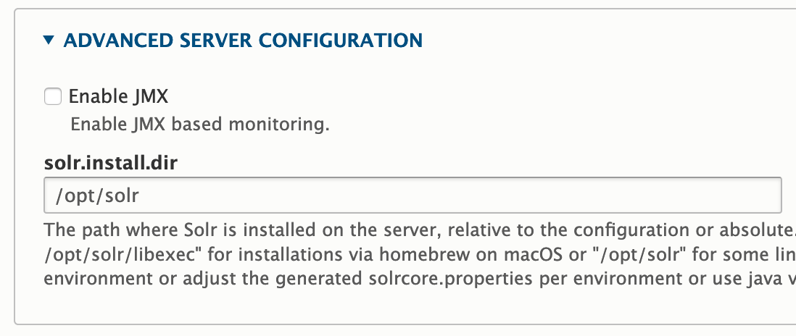

Installing Solr¶
Needs Maintenance
The manual installation documentation is in need of attention. We are aware that some components no longer work as documented here. If you are interested in helping us improve the documentation, please see Contributing.
In this section, we will install:¶
- Apache Solr 8, the search engine used to index and find Drupal content
- search_api_solr, the Solr implementation of Drupal's search API
Solr 9¶
Downloading and Placing Solr¶
The Solr binaries can be found at the Solr downloads page; the most recent stable release of Solr 9 should be used.
# While generally we download tarballs as .tar.gz files without version
# information, the Solr installer is a bit particular in that it expects a .tgz
# file with the same name as the extracted folder it contains. It's odd, and we
# can't really get around it.
cd /opt
sudo wget -O SOLR_TARBALL SOLR_DOWNLOAD_LINK
sudo tar -xzvf SOLR_TARBALL
SOLR_DOWNLOAD_LINK: NOTICE: This will depend on a few different things, not least of all the current version of Solr. The link to the .tgz for the binary on the downloads page will take you to a list of mirrors that Solr can be downloaded from, and provide you with a preferred mirror at the top. This preferred mirror should be used as the SOLR_DOWNLOAD_LINK.
- SOLR_TARBALL: The filename that was downloaded, e.g., solr-9.6.1.tgz
Running the Solr Installer¶
Solr includes an installer that does most of the heavy lifting of ensuring we have a Solr user, a location where Solr lives, and configurations in place to ensure it’s running on boot.
-UNTARRED_SOLR_FOLDER: This will likely simply be solr-VERSION, where VERSION is the version number that was downloaded.
The installer will start the service for you. Check the status and stop and restart if needed:
If you want to use the web dashboard (for development only) you can edit the solr.in.sh file to make it more accessible.
Find #SOLR_JETTY_HOST="127.0.0.1" and change it to SOLR_JETTY_HOST="0.0.0.0". (Note the lack of # now.)
Restart Solr sudo systemctl restart solr and go to http://localhost:8983/solr.
Increasing the Open File Limit (Optional)¶
Solr's installation guide recommends that you increase the open file limit so that operations aren't disrupted while Solr is trying to access things in its index. This limit can be increased while the system is running, but doing so won't persist after a reboot. You can hard-increase this limit using your system's sysctl file:
/etc/sysctl.conf
Add the following line to the end of the file:
Then apply your new configuration.
Installing search_api_solr¶
Rather than use an out-of-the-box configuration that won’t be suitable for our purposes, we’re going to use the Drupal search_api_solr module to generate one for us. This module was already installed if you used the starter site, but you can install it if you didn't:
cd /var/www/html/drupal
sudo -u www-data composer require drupal/search_api_solr:^4.2
drush -y en search_api_solr
You should see an output similar to this:
The following module(s) will be enabled: search_api_solr, language, search_api
// Do you want to continue?: yes.
[success] Successfully enabled: search_api_solr, language, search_api
Configuring search_api_solr¶
Before we can create configurations to use with Solr, the core we created earlier needs to be referenced in Drupal. Again, the starter site provides this already; but if you installed it yourself, the directions below should help.
Log in to the Drupal site at /user using the sitewide administrator username and password (if using defaults from previous chapters this should be islandora and islandora), then navigate to /admin/config/search/search-api/add-server.
Fill out the server addition form using the following options:



SERVER_NAME:islandora- This is completely arbitrary, and is simply used to differentiate this search server configuration from all others. Write down or otherwise pay attention to the
machine_namegenerated next to the server name you type in; this will be used in the next step.
- This is completely arbitrary, and is simply used to differentiate this search server configuration from all others. Write down or otherwise pay attention to the
As a recap for this configuration:
- Server name should be an arbitrary identifier for this server
- Enabled should be checked
- Backend should be set to Solr
- Under CONFIGURE SOLR BACKEND, Solr Connector should be set to Standard
- Under CONFIGURE STANDARD SOLR CONNECTOR:
- HTTP protocol is simply set to http since we've set this up on the same machine Drupal lives on. On a production installation, Solr should likely be installed behind an HTTPS connection.
- Solr host can be set to localhost since, again, this is set up on the same machine Drupal lives on. On a production installation, this may vary, especially if parts of the installation live on different severs
- Solr port should be set to the port Solr was installed on, which is 8983 by default
- Solr path should be set to the configured path to the instance of Solr; in a default installation, there is only one Solr instance, and it lives at /
- Solr core should be the name of the Solr core you created earlier, which is why it's listed as SOLR_CORE here
- Under ADVANCED SERVER CONFIGURATION, solr.install.dir should be set to the path where we installed Solr, which this guide has established at /opt/solr
Click Save to create the server configuration.
NOTICE You can ignore the error about an incompatible Solr schema; we're going to set this up in the next step. In fact, if you refresh the page after restarting Solr in the next step, you should see the error disappear.
Generating and Applying Solr Configurations¶
Now that our core is in place and our Drupal-side configurations exist, we’re ready to generate Solr configuration files to connect this site to our search engine.
cd /var/www/html/drupal
drush solr-gsc SERVER_MACHINE_NAME solrconfig.zip
unzip -d ~/solrconfig solrconfig.zip
sudo -u solr /opt/solr/bin/solr create_core -c SOLR_CORE -d ~/solrconfig -n SOLR_CORE
sudo systemctl restart solr
SERVER_MACHINE_NAME: This should be the machine_name that was automatically generated when creating the configuration in the above step. The starter site uses default_solr_server.
Adding an Index¶
The site template provides an index for us; but if you didn't use it, you need to set up your index configuration. Navigate to /admin/config/search/search-api/add-index and check off the things you'd like to be indexed.
NOTICE You should come back here later and reconfigure this after completing the last step in this guide. The default indexing configuration is pretty permissive, and you may want to restrict, for example, indexed content to just Islandora-centric bundles. This guide doesn't set up the index's fields either, which are going to be almost wholly dependent on the needs of your installation. Once you complete that configuration later on, re-index Solr from the configuration page of the index we're creating here.


Click Save to add your index and kick off indexing of existing items.